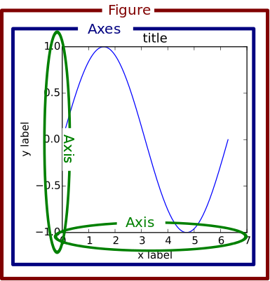
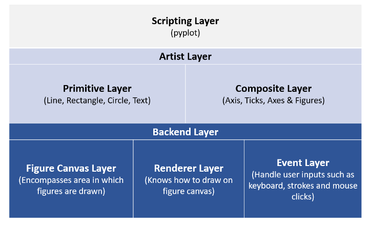
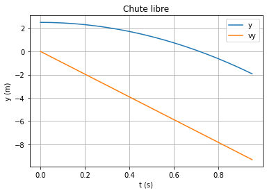
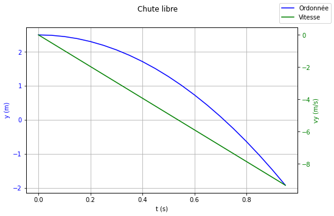

Tracer une courbe avec Matplotlib⚓︎
Brève introduction⚓︎
Matplotlib a été créé en 2003 par un neurobiologiste (John Hunter) pour s'affranchir du logiciel MATLAB et notamment son caractère propriétaire.
Une des caractéristiques de MATLAB est son style global totalement à l'opposé des processus d'importation de python.
Un graphique matplotlib est constitué de nombreux objets hiérarchisés de la manière suivante:

Les objets les plus importants à notre niveau sont: Figure, Axes et dans une moindre mesure Axis.
Matplotlib est assez difficile d'approche pour les raisons suivantes:
- la librairie est énorme (entre 70000 et 200000 lignes de code suivant les sources)
- il fournit plusieurs interfaces (façon de tracer une figure);
- certains points de la documentation ne sont pas à jour.
Enfin, d'un point de vue architecturale, matplotlib peut être décomposé en trois couches:

Remarque
La très grande majorité des scripts présents dans les manuels du secondaire, mais aussi dans la formation Python en sciences physiques dispensée sur Magistère, utilisent la couche de script avec Pyplot. Ce n'est pas forcément le meilleur choix ... (voir ci-après)
Quelle interface choisir ?⚓︎
Interface Pylab⚓︎
Afin de retrouver le style global de MATLAB, un module de matplotlib a été conçu: Pylab. L'utilisation de Pylab est contraire aux bonnes habitudes codage en python et peut être de surcroit à l'origine de nombreux bugs difficiles à cerner. D'après la documentation, disponible ici:
pylab is a module that includes matplotlib.pyplot, numpy, numpy.fft, numpy.linalg, numpy.random, and some additional functions, all within a single namespace. Its original purpose was to mimic a MATLAB-like way of working by importing all functions into the global namespace. This is considered bad style nowadays.
On ne devrait donc PAS UTILISER CE MODULE, contrairement au sujet E3C Physique Chimie n° 02715, page 2!
Interface avec état Pyplot (pour des cas très simples)⚓︎
Pyplot fait partie de la couche de script de matplotlib. Pyplot possède une multitude de fonction permettant de tracer simplement des graphiques. Son utilisation libère l'utilisateur de toutes manipulations d'objets de plus bas niveau.
En arrière plan, Pyplot créé, enregistre l'état de tous les objets utiles (Figure, Axes, etc.). Au final, on n'a qu'à saisir les commandes comme on le ferait dans un shell interactif.
Exemple
1 2 3 4 5 6 7 8 9 10 11 12 13 14 15 16 17 18 19 20 | |

Toutes les fonctions de Pyplotse réfèrent aux objets Figure ou Axes courants (ou alors les créent si ces derniers n'existent pas). Mais qu'en est-il si on a plusieurs graphiques (Axes) à gérer ?
On voit sur l'exemple ci-dessus les premiers problèmes apparaître: les deux tracés partagent les mêmes axes et ... la parabole est très écrasée !
Par ailleurs, le fait que Pyplot gère tout en arrière plan, ne nous permet pas de personnaliser au maximum nos graphiques. De ce fait, cette interface n'est pas la plus recommandée.
Interface sans état ou approche orientée objet⚓︎
C'est l'approche recommandée par la documentation officielle et notamment lorsqu'on doit gérer plusieurs graphiques ou modifier des attributs très particuliers de certains objets (graduation des axes par exemple).
1 2 3 4 5 6 7 8 9 10 11 12 13 14 15 16 | |
1 | |

Conclusion⚓︎
Dans la documentation officielle, on peut relever les passages suivants:
pyplot is mainly intended for interactive plots and simple cases of programmatic plot generation.
et
At its core, Matplotlib is object-oriented. We recommend directly working with the objects, if you need more control and customization of your plots.
Après lecture de cette page, on peut conclure qu'il faudrait adopter l'approche orientée objet afin de pouvoir mieux personnaliser ses graphiques. Dans tous les cas, on n'utilisera plus l'interface pylab.